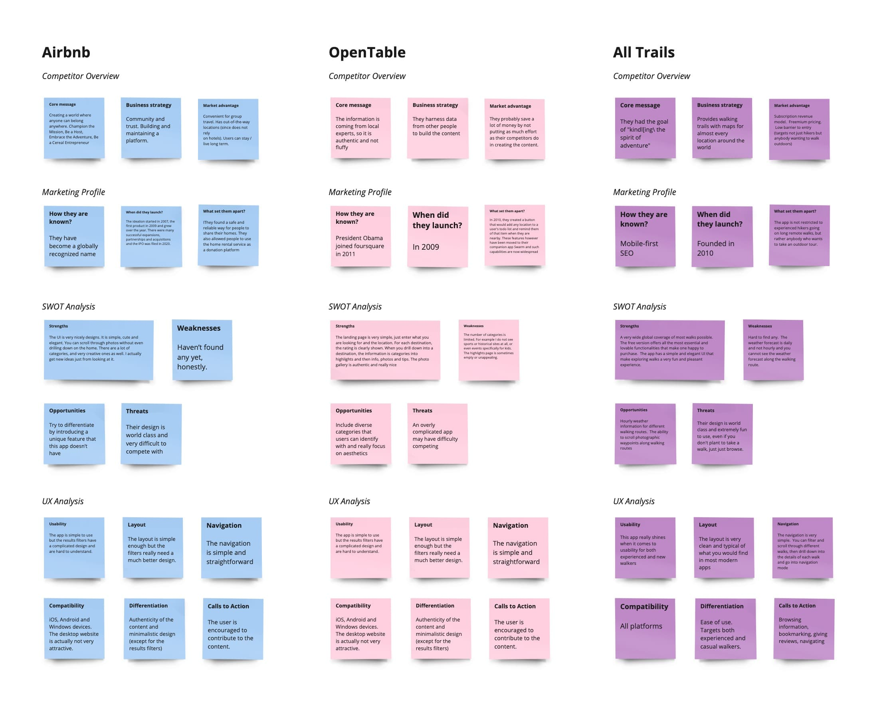

Walking App - MVP Design
Introduction
I would like to share a lean user experience journey that I have taken to develop an MVP for an outdoor walking app.

Competitive Analysis
I started off the design process by doing a competitive analysis of three different location-based recommendation apps in order to discover what standards I should consider when designing a location-based recommendation app and what opportunities exist to stand out in the market.
Personas
Next, I recruited and interviewed a few people around the globe who use location-based recommendation apps. This helped me to learn more about, when it comes to location-based recommendations, what kinds of things people were keen to accomplish, what is getting in their way, and what opportunities existed to add value to their experience.
MVP Definition
Next, I defined what the Minimal Viable Product would be for the location-based recommendation app. The app is to be an outdoor walking app and this was a theme that was inspired by learning that many people who needed location/based recommendations were not traveling by car and were keen to have a pleasant outdoor walking experience.

Jobs To Be Done
I defined the purpose, functionalities, and jobs to be done based on the types of personas that I extracted from my research.

User Flow for Each 'Job To Be Done'
For each Job To Be Done, I created a user flow, taking into consideration the user’s end goal and success criteria. Each task was defined from the moment the user opens the app, to the point where they reach their specific goal.
Overall User Flow
Next, I took the user flows and combined them into an overall flow that articulated, all the possible ways that a user could step through the application, and how the application would respond.
I then took the user flow and converted the screen states into screen layouts. This gave me a preliminary design to start with, which then, I could evolve into a better design.

Ideation
Crazy 8's
I then took each preliminary screen design through a crazy 8 exercise. The crazy 8 exercise was an intense and divergent ideation phase by redrawing each screen in 8 different ways. This was both inspiring as well as mentally strenuous. After finishing the crazy’s, I selected my favorite screen out of each set.

Digital Paper Prototype
I used the best screens to draw a low-fidelity digital prototype of the app. The low fidelity design included more details such as copy and tab bars. Figjam provided rounded rectangles where the corner radius was almost the same as my smartphone so I used the rectangles as a guide both in the crazy 8 exercises, and when drawing the detailed low-fidelity screens.

Low Fidelity Prototype
In order to create a digital paper prototype, I copied the screen drawings from figjam into figma and linked the UI elements together using transparent rectangles.
I then performed usability tests in order to determine if users were able to use the app to
- Find suitable walks
- Gain information about these walks
- Navigate these walks
Testing
I wanted to know, overall, if users cloud flow smoothly through individual tasks that require searching, learning, decision making, navigating and analyzing data. The key questions were
- Can they find walks based on specific criteria?
- Can they save walks for later viewing, or add walks they like to their favorites list?
- Can they extract valuable insights about walks so they can better prepare?
- Can they use their walking history to recall details about their past walking experiences?
- Can they access the navigation feature correctly?
Retrospective
This was a great light user research experience to prepare me for designing a high-fidelity walking app. After finishing I did a self-retrospective on my experience through this design process.

Please stay tuned for updates as I begin my journey of designing a high-fidelity version of this app.
Grey Boxing
Inspiration
Visual Direction #1